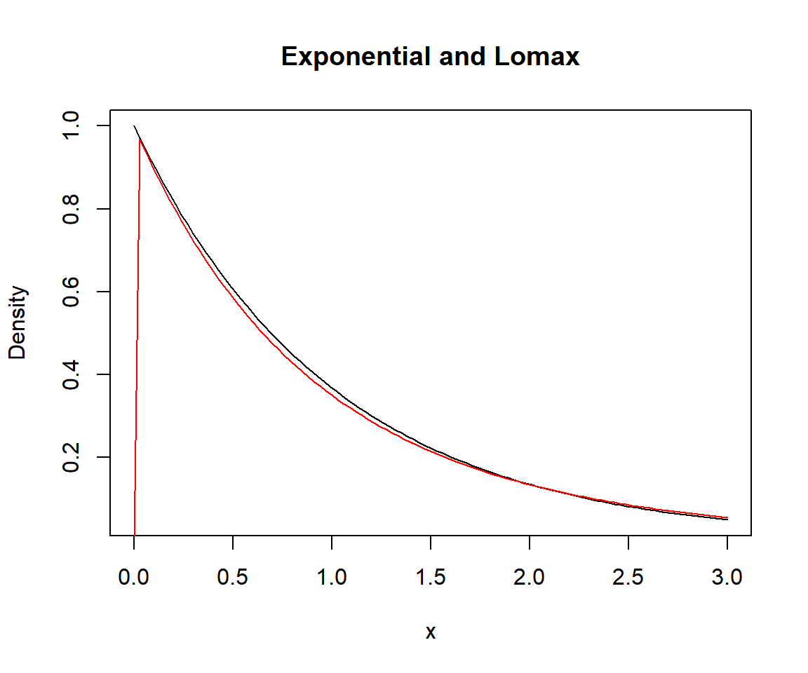

These are the currently implemented distributions.
| Name | Package | Parameters | Estimator | Support |
|---|---|---|---|---|
| Cauchy distribution | stats |
location,scale
|
mlcauchy |
\(\mathbb{R}\) |
| Gumbel distribution | extraDistr |
mu, sigma
|
mlgumbel |
\(\mathbb{R}\) |
| Laplace distribution | extraDistr |
mu, sigma
|
mllaplace |
\(\mathbb{R}\) |
| Logistic distribution | stats |
location,scale
|
mllogis |
\(\mathbb{R}\) |
| Normal distribution | stats |
mean, sd
|
mlnorm |
\(\mathbb{R}\) |
| Beta prime distribution | extraDistr |
shape1, shape2
|
mlbetapr |
\((0, \infty)\) |
| Exponential distribution | stats | rate |
mlexp |
\([0, \infty)\) |
| Gamma distribution | stats |
shape,rate
|
mlgamma |
\((0, \infty)\) |
| Inverse gamma distribution | extraDistr |
alpha, beta
|
mlinvgamma |
\((0, \infty)\) |
| Inverse Gaussian distribution | actuar |
mean, shape
|
mlinvgauss |
\((0, \infty)\) |
| Inverse Weibull distribution | actuar |
shape, rate
|
mlinvweibull |
\((0, \infty)\) |
| Log-logistic distribution | actuar |
shape, rate
|
mlllogis |
\((0, \infty)\) |
| Log-normal distribution | stats |
meanlog, sdlog
|
mllnorm |
\((0, \infty)\) |
| Lomax distribution | extraDistr |
lambda, kappa
|
mllomax |
\([0, \infty)\) |
| Rayleigh distribution | extraDistr | sigma |
mlrayleigh |
\([0, \infty)\) |
| Weibull distribution | stats |
shape,scale
|
mlweibull |
\((0, \infty)\) |
| Log-gamma distribution | actuar |
shapelog, ratelog
|
mllgamma |
\((1, \infty)\) |
| Pareto distribution | extraDistr |
a, b
|
mlpareto |
\([b, \infty)\) |
| Beta distribution | stats |
shape1,shape2
|
mlbeta |
\((0, 1)\) |
| Kumaraswamy distribution | extraDistr |
a, b
|
mlkumar |
\((0, 1)\) |
| Logit-normal | logitnorm |
mu, sigma
|
mllogitnorm |
\((0, 1)\) |
| Uniform distribution | stats |
min, max
|
mlunif |
\([\min, \max]\) |
| Power distribution | extraDistr |
alpha, beta
|
mlpower |
\([0, a)\) |
This package follows a naming convention for the ml*** functions. To access the documentation of the distribution associated with an ml*** function, write package::d***. For instance, to find the documentation for the log-gamma distribution write
The maximum likelihood estimator of the Lomax distribution frequently fails to exist. For assume \(\kappa\to\lambda^{-1}\overline{x}^{-1}\) and \(\lambda\to0\). The density \(\lambda\kappa\left(1+\lambda x\right)^{-\left(\kappa+1\right)}\) is approximately equal to \(\lambda\kappa\left(1+\lambda x\right)^{-\left(\lambda^{-1}\overline{x}^{-1}+1\right)}\) when \(\lambda\) is small enough. Since \(\lambda\kappa\left(1+\lambda x\right)^{-\left(\lambda^{-1}\overline{x}^{-1}+1\right)}\to\overline{x}^{-1}e^{-\overline{x}^{-1}x}\), the density converges to an exponential density.
eps = 0.1
x = seq(0, 3, length.out = 100)
plot(dexp, 0, 3, xlab = "x", ylab = "Density", main = "Exponential and Lomax")
lines(x, extraDistr::dlomax(x, lambda = eps, kappa = 1/eps), col = "red")